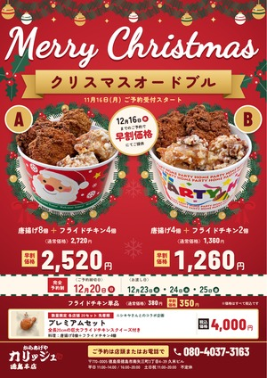
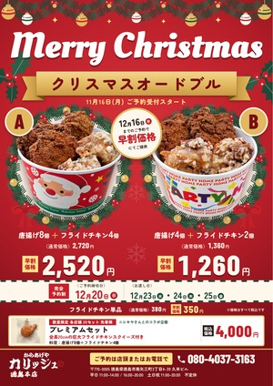
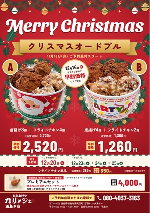
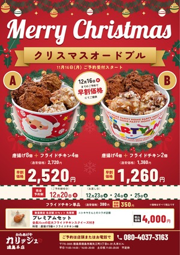
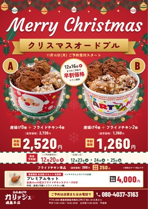

Merry Christmas の書体くらべ
いまの書体Dancing Script
線が細く、字がつながっていて、読むのに一瞬かかります。
チラシ全体を小さくしたとき

案1（おすすめ）Oleo Script
筆記体の勢いを残しつつ太くて、小さくても一番読みやすい。
チラシ全体を小さくしたとき

案2Sansita Swashed
太くて丸みがあり、にぎやか。字のすき間が狭く、案1より詰まって見えます。
チラシ全体を小さくしたとき

案3Lobster Two
案1より筆記体らしさが強い。読みやすさは案1と今の間です。
チラシ全体を小さくしたとき

案4Courgette
いちばん上品で軽い。そのぶん遠くからの強さは落ちます。
チラシ全体を小さくしたとき
